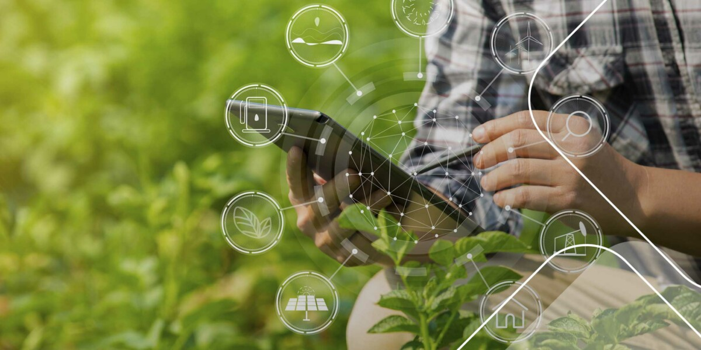
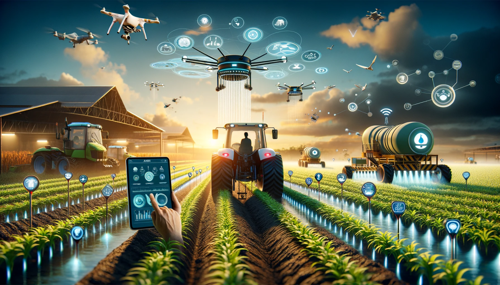

Você está offline. Alguns recursos podem não funcionar.
Tecnologia no Campo

Importância da Tecnologia no Campo
A integração da tecnologia no campo agrícola tem se mostrado essencial para alcançar maior eficiência, produtividade e sustentabilidade. Tecnologias como a Internet das Coisas (IoT), inteligência artificial e análise de dados estão revolucionando a maneira como as atividades agrícolas são conduzidas, proporcionando uma gestão mais precisa e informada.

Evoluções do Agro ao Longo do Tempo
Com o passar dos anos, o setor agropecuário passou por inúmeras transformações. Desde a mecanização com tratores e colheitadeiras, até a automação e o uso de drones para monitoramento de lavouras, cada avanço trouxe consigo um aumento significativo na produtividade e na eficiência. Hoje, o uso de tecnologias digitais e sistemas de gerenciamento integrado está moldando o futuro da agricultura.
Agro Tech
Inovações e oportunidades no Agro
Ao selecionar um link externo, você acessa aqui o conteúdo direto no aplicativo. O agronegócio já vive a fase de agricultura de precisão, drones, análise de dados e cursos modernos que preparam profissionais para o mercado atual.
Drones no campo
Drones com sensores avançados ajudam a monitorar culturas, detectar pragas e otimizar aplicações de insumos, entregando eficiência e sustentabilidade.
Novas tecnologias
Soluções como IoT, sistemas de gestão agrícola e análise preditiva transformam propriedades em operações mais inteligentes e conectadas.
Cursos e qualificação
Capacitação em agro 4.0, gestão digital e sustentabilidade está em alta. O mercado busca pessoas que entendem tecnologia, dados e práticas agrícolas modernas.
Escolha um dos links abaixo para abrir no navegador ou use o botão Voltar para retornar à página principal.